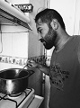
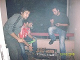

Sağlığınızı önemsiyorum
Sadece sabah kahvaltılarında ekmek yemek serbest. Kola ve çikolata türevleri yasak.Akşam 8'den sonra sadece su,çay ve ayran gibi içecekler serbest.
Spor yaptığınız günler mümkünse yatmadan önce 1 bardak süt içmeyi ihmal etmeyin.Böylece gece kas yıkımını engellemiş olursunuz.
Kahvaltıda en az 2 yumurta yemeyi ihmal etmeyin.
Kahvaltı bilindiği gibi günün en önemli öğünüdür ve kesinlikle güne dinç başlamanın en basit yoludur. Spor yapmaya başladıktan sonra en önemli protein kaynağı olan yumurtayı ihmal etmeyin. En sağlıklısı haşlanmış olmasına karşın yağda da pişirip yiyebilirsiniz.
Emin Ellerdesiniz
Herkesin kilosu ve metabolizma hızı farklı olacağından bir diyetisyene görünmenizde fayda var.
Bu noktadaki tavsiyelerin hiçbiri gerçeği yansıtmayacağından ve her bünyenin her yiyeceğe karşı tepkisi farklı olduğundan,beslenme noktasında haftalık spor saati minimum 6 saat olarak ayarlanmak üzere diyetisyeninizden öneriler almalısınız.
Beslenme Hakkında
Beslenme olmadan spor, spor değildir.
Önce düzenli uyku,sonra düzenli spor ve düzenli yemek...Bunlardan biri bile eksik olduğunda yapacağınız spor anlamsızdır.Birçok kişinin önemsemediği bacak antremanlarını da esgeçmeyin.Vücudunuz bacaklarınızın kaldırabileceği ölçüde gelişir bunu unutmayın.
